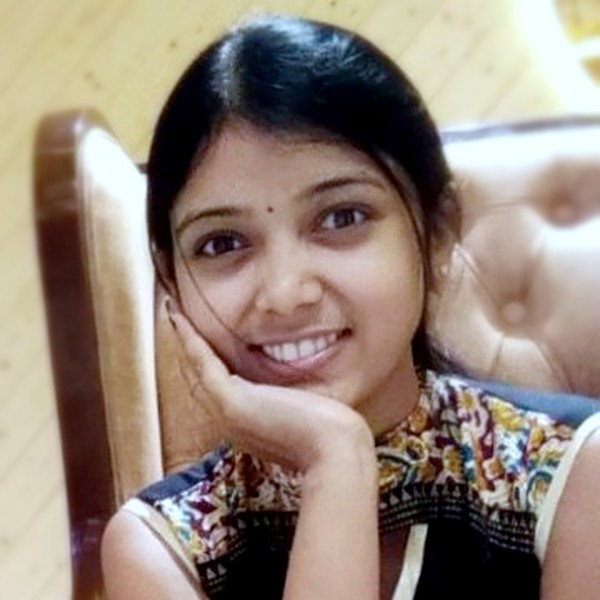

Murky-CHARM: Coral Health Assessment using Robots in Murky Environments
Nature Communications, 2026
To appear
Patent filed

I build embodied AI that lets robots perceive, decide and act in the messy real world.
Since 2023, I have been a Senior Research Assistant at the MARVL Lab, SUTD, with Dr. Malika Meghjani, building robots for ship hull inspection and coral reef monitoring in Singapore's waters. I develop vision-language models that decide what to capture from a text prompt, 3D scene graphs for open-ended tasks, and navigation, collision avoidance and trajectory planning for an autonomous survey vessel. I integrate them on ROS 2, prune and quantise models to run in real time on board, and test them in the field.
Before that, I applied machine learning to IoT systems at United Arab Emirates University and worked as a freelance data scientist. I hold a BSc in Physics, Mathematics and Computer Science and an MSc in Physics from Gondwana University.
I am currently open to research engineer roles in embodied AI and robotics, from model development to real-world deployment. Feel free to get in touch.
@inproceedings{thengane2025merlion,
title={MERLION: Marine ExploRation with Language guIded Online iNformative Visual Sampling and Enhancement},
author={Thengane, Shrutika and Prasetyo, Marcel Bartholomeus and Tan, Yu Xiang and Meghjani, Malika},
booktitle={IEEE International Conference on Robotics and Automation (ICRA)},
year={2025}
}
@inproceedings{thengane2024wavediff,
title={WaveDiff: Underwater Visual Data Enhancement with Wavelet-Accelerated Diffusion},
author={Thengane, Shrutika and Tan, Yu Xiang and Prasetyo, Marcel Bartholomeus and Meghjani, Malika},
booktitle={OCEANS 2024 - Halifax},
year={2024}
}
@inproceedings{thengane2024sonis,
title={Online Informative Sampling Using Semantic Features in Underwater Environments},
author={Thengane, Shrutika and Tan, Yu Xiang and Prasetyo, Marcel Bartholomeus and Meghjani, Malika},
booktitle={OCEANS 2024 - Singapore},
year={2024}
}